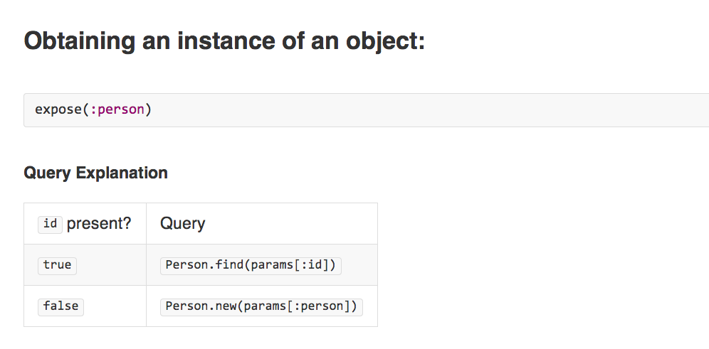
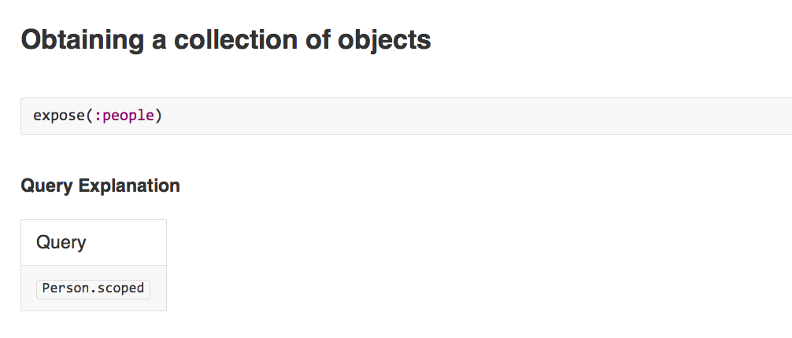
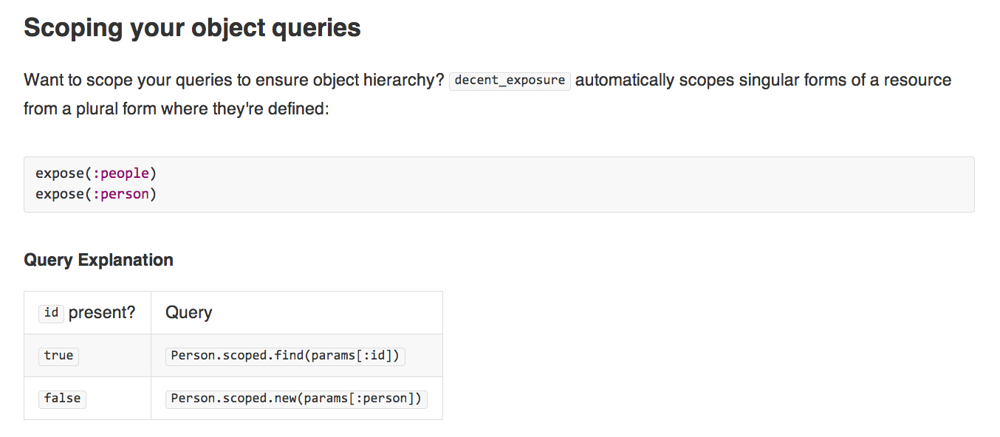

Clean up your Rails Controllers
with Decent Exposure
Name: Ryan Jones
Position: AMA - Manager, Web Development
Email: ryan@system88.com
Name: Ryan Jones
Position: AMA - Manager, Web Development
Email: ryan@system88.com
app/controllers/posts_controller.rb
app/views/posts/show.html.erb
app/controllers/posts_controller.rb
app/views/posts/show.html.erb
Rails default scaffold



Specify the model name:
Specify the parameter accessor method:
Specify the finder method (ie: reset password):
Specify the parameter key to use to fetch the object:
Off the beaten path (careful):
/